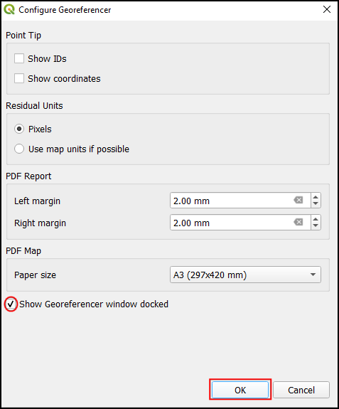
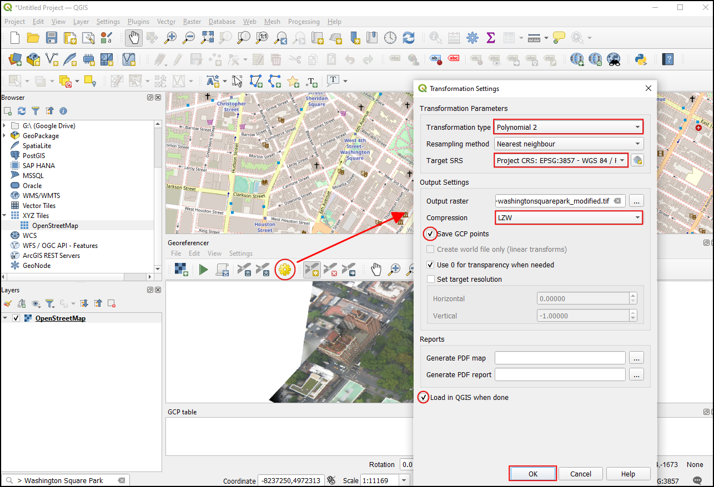
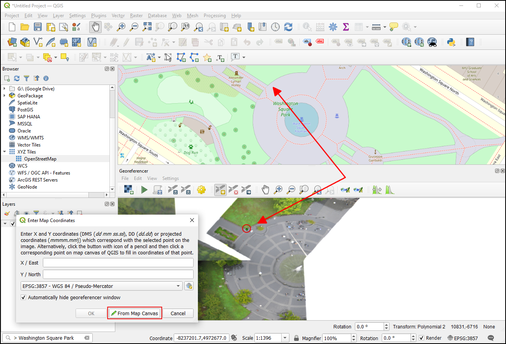
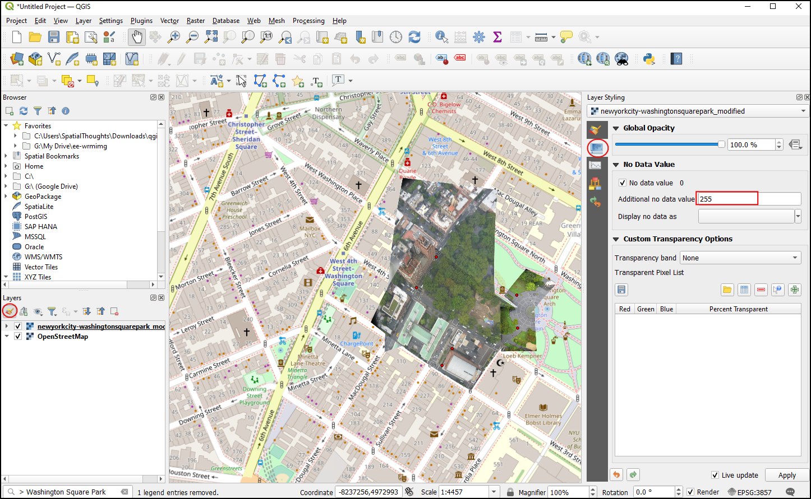

Ujaval Gandhi
Ujaval GandhiGeoreferenciranje aerosnimaka (QGIS3)¶
U tutorijalu Georeferenciranje topografskih listova i skeniranih mapa (QGIS3), obradili smo osnovni proces georeferenciranja u QGIS-u. Taj metod je uključivao čitanje koordinata sa vaše skenirane mape i njihov ručni unos kao kontrolnih tačaka. Međutim, često se dešava da nemate koordinate odštampane na vašoj mapi ili pokušavate da georeferencirate sliku. U tom slučaju, možete koristiti drugi georeferencirani izvor podataka kao svoj ulaz. Ovaj tutorijal će vas naučiti kako da koristite postojeće otvorene izvore podataka u svom procesu georeferenciranja.
Pregled zadatka¶
Georeferenciraćemo sliku balona visoke rezolucije koristeći referentne koordinate iz OpenStreetMap-a.
Druge veštine koje ćete naučiti¶
Korišćenje XYZ slojeva pločica kao osnovne mape u QGIS-u.
Korišćenje ugrađenog geokodera Nominatim.
Postavljanje korisnički definisane vrednosti „Bez podataka“ za sloj.
Dobijte podatke¶
U ovom tutorijalu, koristićemo slike zmajeva i balona koje je prikupila Javna laboratorija. Oni takođe stavljaju na raspolaganje georeferencirane verzije slika, ali mi ćemo preuzeti negeoreferenciranu JPG sliku i proći kroz proces njenog georeferenciranja u QGIS-u.
Preuzmite JPG sliku parka „Vašington skver, Njujork <https://publiclab.org/map/washington-square-park-new-york-new-york/2012-10-01>“. Možete kliknuti desnim tasterom miša na dugme JPG i izabrati Sačuvaj vezu kao….
Radi lakšeg snalaženja, možete direktno preuzeti kopiju skupa podataka sa linka ispod:
Procedura¶
Koristićemo osnovnu mapu iz OpenStreetMap-a za snimanje koordinata za georeferenciranje. QGIS3 dolazi sa ugrađenom podrškom za slojeve pločica. Oni su obično poznati kao ’XYZ’ slojevi jer su napravljeni korišćenjem pojedinačnih pločica mape za svaki nivo zumiranja (z) na x,y koordinatnoj mreži. Sloj „OpenStreetMap“ možete pronaći pod XYZ pločice u Panelu pregledača. Prevucite sloj na glavno platno. Nakon učitavanja, obratite pažnju na Koordinatni Referentni Sistem (CRS) za ovaj sloj u donjem desnom uglu. Podešen je kao
EPSG 3857 Pseudo Mercator. Ovo je važno jer će koordinate koje zaključujemo iz ovog sloja tokom georeferenciranja biti u ovom CRS-u.

Белешка
Pogledajte ovu stranicu <https://www.spatialbias.com/2018/02/qgis-3.0-xyz-tile-layers/>`_ za više detalja o XYZ slojevima i kako dodati druge osnovne mape u QGIS.
Slika koju georeferenciramo je za „Washington Square Park, New York“. Možete zumirati/pomerati da biste locirali ovaj park na mapi. Ali to je glomazno i nije praktično. Od QGIS verzije 3.20 pa nadalje, postoji ugrađena podrška za Nominatim Geocoder zasnovan na OpenStreetMap-u. Kliknite na traku za pretragu u donjem levom uglu QGIS prozora. Da biste ovo koristili kao prefiks geokodera, dodajte mesto za pretragu sa „>“. Pretraga za „Washington Square Park“ će prikazati listu adresa koje možete izabrati. Kliknite na prvu adresu.

Platno mape će biti centrirano na Trg parka. Sada hajde da počnemo sa georeferenciranjem. Pokrenite Georeferencer iz .
Белешка
Od QGIS verzija 3.26 pa nadalje, Georeferencer se može pokrenuti iz .

Za georeferenciranje aerosnimka, moramo da izaberemo koordinatne tačke iz OpenStreetMap-a, pa hajde prvo da usidrimo alatku Georeferencer u glavni QGIS prozor. Izaberite Configure Georeference iz .

Označite Prikaži prozor georeferencera usidren i kliknite U redu.

Prozor Georeferencer biće usidren na dnu glavnog QGIS prozora. Učitajmo datoteku slike klikom na ikonu Otvori raster u prozoru Georeferencer i odlaskom na preuzetu JPG datoteku. Kliknite na Otvori.

Pre dodavanja kontrolnih tačaka tla (GCP), potrebno je da definišemo podešavanja transformacije. Kliknite na ikonu Podešavanja transformacije da biste otvorili dijalog Podešavanja transformacije. Izaberite Tip transformacije kao
Polinom 2. Pogledajte QGIS dokumentaciju da biste saznali više o različitim tipovima transformacije i njihovoj upotrebi. Kao što je ranije napomenuto, naša osnovna mapa je uEPSG 3857 Pseudo MercatorCRS-u, pa to postavite kao Ciljni CRS. Možete ostaviti Izlazni raster ime kao podrazumevano i izabratiLZWkao Kompresiju. Označite Koristi 0 za transparentnost kada je potrebno. Označite polje Sačuvaj GCP tačke da biste sačuvali tačke kao zasebnu datoteku za buduće svrhe. Uverite se da je opcija Učitaj u QGIS kada bude gotovo označena. Kliknite na U redu.

Sada kliknite na dugme Dodaj tačku na traci sa alatkama i izaberite lako prepoznatljivu lokaciju na slici. Uglovi, raskrsnice, stubovi itd. predstavljaju dobre kontrolne tačke. Kada kliknete na sliku na lokaciji kontrolne tačke, videćete iskačući prozor koji traži da unesete koordinate mape. Kliknite na dugme Sa platna mape.

U sloju „OpenStreetMap“, kliknite na tačnu lokaciju u referentnom sloju. Koordinate će biti automatski popunjene klikom na platno mape. Kliknite na U redu.

Белешка
Savet: Prilikom izbora GCP-a na zgradi, uvek birajte donji deo zgrade. Većina snimaka iz vazduha i satelita prikazuje nagnute zgrade, tako da će izbor tačke na krovu dovesti do grešaka.
Slično tome, izaberite najmanje 6 tačaka na slici i dodajte njihove koordinate iz referentnog sloja. Kada dodate minimalni broj tačaka potrebnih za transformaciju, primetićete da GCP sada imaju vrednosti greške
dX,dYiResidualkoje nisu nule. Ako određeni GCP ima neuobičajeno visoke vrednosti greške, to obično znači ljudsku grešku pri unosu vrednosti koordinata. Dakle, možete izbrisati taj GCP i ponovo ga snimiti.

Kada ste zadovoljni sa GCP-ovima, kliknite na Pokreni georeferenciranje. Ovo će pokrenuti proces iskrivljavanja slike pomoću GCP-ova i kreiranja ciljnog rastera. Kada se proces završi, videćete sloj učitan u QGIS-u. Zatvorite prozor Georeferencer.

{kind=link}
Sada kliknite na ikonu Otvori panel za stilizovanje sloja i pređite na karticu Transparentnost. Dodajte
255kao Dodatna vrednost bez podataka. Ovo će ukloniti beli okvir oko slike. Sada ćete videti svoju georeferenciranu sliku lepo postavljenu preko osnovnog sloja.

Белешка
8-bitne slike imaju vrednosti piksela u opsegu od 0-255. 0 je crna, a 255 je bela.
If you want to give feedback or share your experience with this tutorial, please comment below. (requires GitHub account)